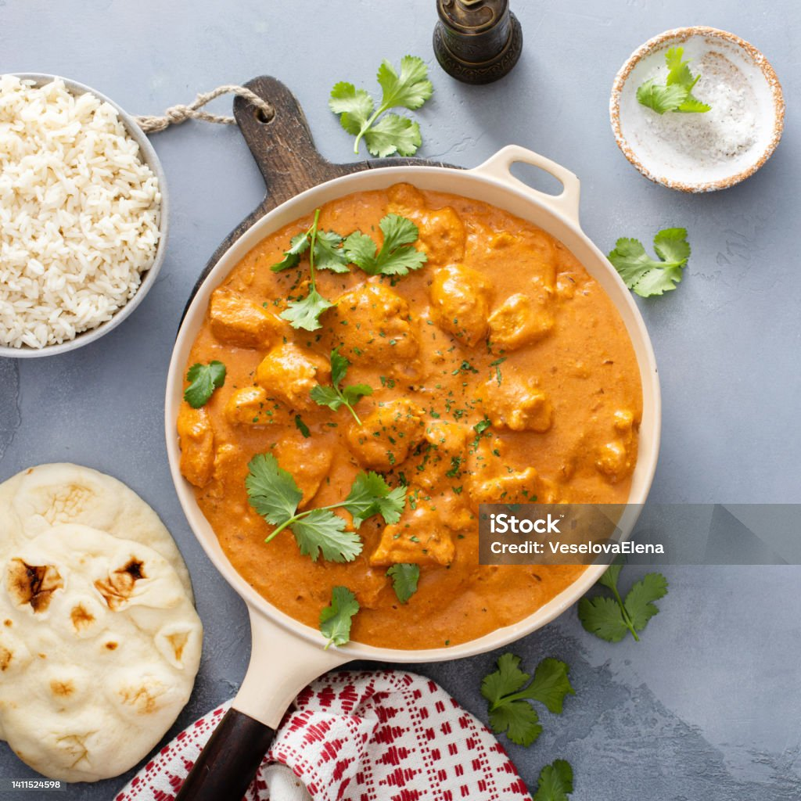

Butter Chicken

DESCRIPTION
Butter Chicken, also known as Murgh Makhani, is a classic Indian dish known for its rich
and creamy tomato-based sauce, tender chicken pieces, and fragrant spices. This recipe
will guide you through creating a flavorful butter chicken at home.
INGREDIENTS
For Chicken Marinade
- 1 lb (450g) boneless, skinless chicken (breast or thighs), cut into 1-inch pieces
- ½ cup plain yogurt (full fat recommended)
- 2 tsp garam masala
- 1 tsp ground turmeric
- 1 tsp ground cumin
- ½ tsp red chili powder (adjust to your preferred spice level)
- Salt, to taste
- 1 tbsp lemon juice
- 1 tsp grated fresh ginger
-
2 cloves garlic, pressed or minced
For the Butter Chicken Sauce
- 2 tbsp unsalted butter
- 1 large onion, finely chopped
- 3 garlic cloves, minced
- 1 tbsp grated ginger
- 1 tsp ground coriander
- 1 tsp paprika
- ½ tsp ground cinnamon
- 1 can (14 oz) tomato puree or crushed tomatoes
- 1 cup heavy cream
- 1 tbsp sugar (optional, for balancing flavors)
- Fresh cilantro, for garnish
- Cooked rice or naan, for serving
STEPS
- Marinate chicken pieces in a mixture of yogurt and spices for at least an hour.
- Prepare the sauce by cooking the marinated chicken in butter until browned, then set aside. Sauté onions, garlic, ginger, and spices, followed by tomato puree. Stir in heavy cream and sugar (if using).
- Return the chicken to the sauce and simmer until cooked through and the sauce thickens. Garnish with cilantro and serve with rice or naan.